Just Forms
full version
v 2.3
Form Framework
- created: 04/15/2015
- latest update: 01/31/2016
- by: LazyCode
Thank you for purchasing Just Forms full. If you have any questions that are beyond the scope of this help file, please feel free to email me via contact form in my profile page.
Intro
Folder organization:
If you`re reading this line, this means that you already unzipped the downloaded package from CodeCanyon. Now, in the extracted package you will find a folder named "source". When you open this folder you will find 3 folders:
- extensions - contains extensions and additions;
-
forms - contains ready-to-use forms with three variants of information processing:
- smtp_sendmail - send email using smtp or sendmail
- smtp_sendmail_csv - send email using smtp or sendmail + duplicate data to a CSV file
- smtp_sendmail_database - send email using smtp or sendmail + duplicate data to a MySQL database (PDO or mysqli will be used)
- templates - contains ready-to-use templates that will help you to create your forms
Basic HTML structure:
In general, HTML structure of any form should look like below:
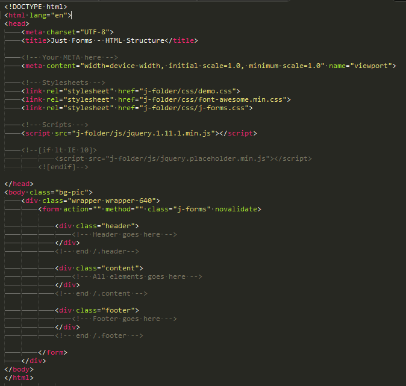Basic CSS structure:
All CSS code is in files:
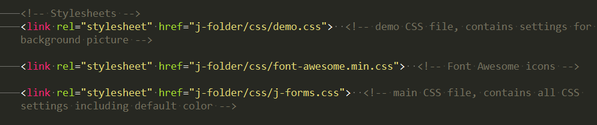In the Just Forms advanced only j-forms.css file is required. It contains all css settings including default color settings. If you want to use Font Awesome icons in your form - you have to add appropriate CSS file in the "head" section of your html page.
All forms have "indigo" color as default color. But you can select any color from available in the css folder. To change form color you have to add css file with color settings. Also, you have to add a "color" class to the form. Pay attention that "color" class has to be equal to the css file name. For instance, take a look to the picture below:
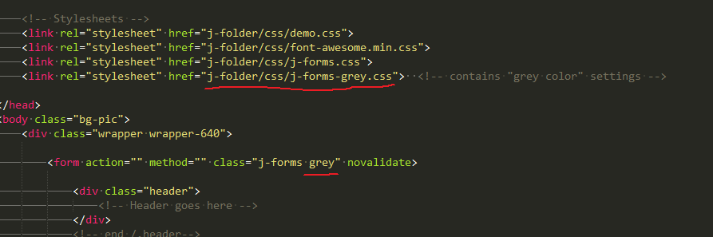So, if you have several forms at one page - you can configure color for all forms. Just connect css files with color settings and add "color" classes to the forms.
Basic JS structure:
If you want to use some extra fields (date pickers, phone masking, etc.) - you have to add appropriate js scripts to the "head" section of your html page. More info - in the "JS Plugins" section.
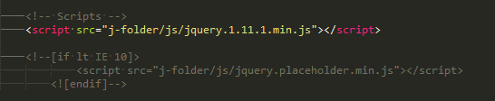Quick Installation
Just Forms full contains a wide selection of forms and templates. You can choose any template from the folder "templates/". You can choose any form from the folder "forms/". All templates and forms are ready to use and you can easily add it to your website. For example, we will add "booking" form to an exemplary site.
Case 1: Install a form like a new html page
Copy files
You have to copy j-folder and index.php file to your website (some folder).
Form files:
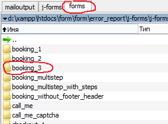 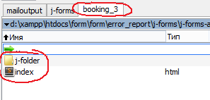j-folder contains all form files and has next folder structure:
- "css/" - folder contains CSS files;
- "fonts/" - folder contains Font Awesome fonts. It is required folder for proper icons displaying;
- "img/" - folder contains image for site background. These image required only for demonstration purpose and should not be copied to the server;
- "js/" - folder contains JavaScript files and libraries. This folder is required;
- "php/" - required folder that contains PHP files.
Configure PHP file
Let`s take a look to the file "action.php" in the folder "j-folder/php/". This file contains several sections and one of them is "Your data" section:
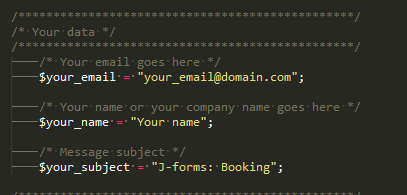In this section you have to enter your email address, your name and subject of the message that your clients will send to you.
Now, your form is ready to use.
Case 2: Install a form to an existing html page
HTML markup
First, you have to add necessary js scripts and files in the "head" section of your html page. Be sure that you set a proper path to form files inside scipt tags.
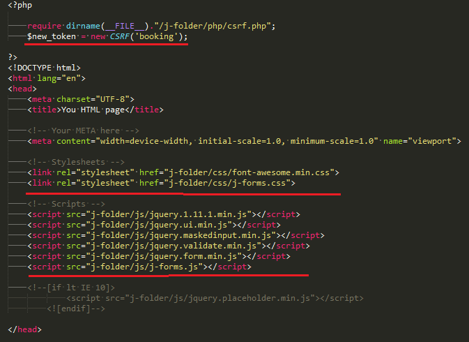Second, you have to copy form to the html page. The form is placed in the "div" with class="wrapper wrapper-640". More about form elements in the "HTML Structure" section.
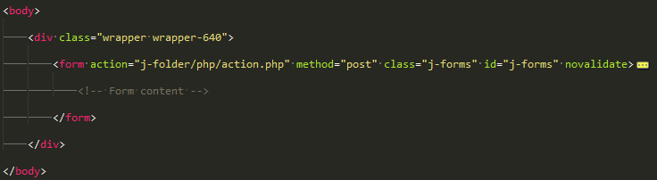Copy files
You have to copy j-folder to your website.
Form files:
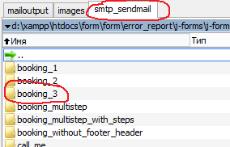 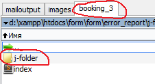Configure PHP file
Let`s take a look to the file "action.php" in the folder "j-folder/php/". This file contains several sections and one of them is "Your data" section:
In this section you have to enter your email address, your name and subject of the message that your clients will send to you.
Now, your form is ready to use.
After you follow these steps form on your site will work properly and send emails to your email address. All forms from the "forms/" folder created similar. So any form can be added to your site by following these steps.
HTML Structure
Let`s take a look to the HTML structure with more attention. All forms have similar structure so you don`t need to change a lot of code with other forms.
Grid sys​tem
Demo of the grid system: "extensions/grid.html"
All forms have responsive design. It works well for PC, tablets, mobile.
Grid system is used for creating form layouts through a series of rows and columns which include your form elements.
- Use rows class="j-row" to create horizontal groups of columns class="span"
- Content should be placed within columns
- Column classes class="span" have to immediately be followed by a column number such as 6, so the entire class will look like this class="span6"
- class="offset" - class that allows you to make some offsets before or between columns
- Offset classes class="offset" have to immediately be followed by an offset number such as 4, so the entire class will look like this class="offset4"
- Grid form columns are created by specifying the number of twelve available columns you wish to span.
A combination of all columns in a row have to add up to 12.
For example:
- two equal columns: span6 + span6 = 12
- one right side column: offset6 + span6 = 12
- six equal columns: span2 + span2 + span2 + span2 + span2 + span2 = 12
- one center column: offset3 + span6 + offset3 = 12
- three unequal columns: span3 + span4 + span5 = 12
For instance, take a look to the pictures below:
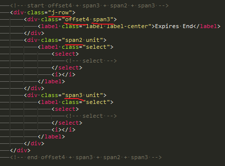 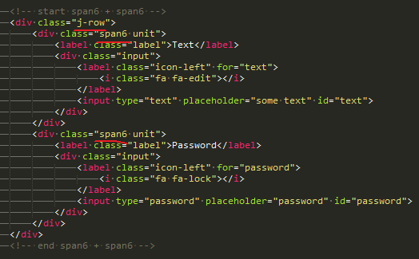 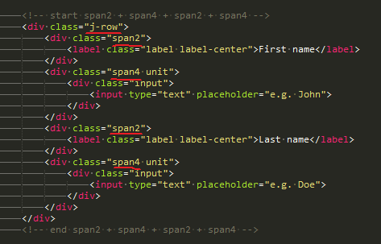If you want to create an element that will be over the entire width of the form - you don't need to use class="j-row". Just wrap your element in class="unit". More about class="unit" - in the next section.
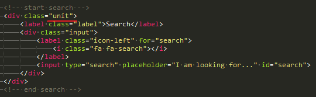Elements
Demo of the elements: "extensions/elements.html"
Form wrapper
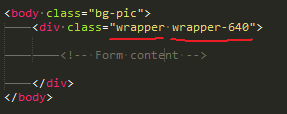class="bg-pic" - this class required only for demonstration purpose. It sets site background.
class="wrapper" - wrapper-class for all forms.
class="wrapper-400" / class="wrapper-640" - this class sets the width of the form. You can toggle these classes and thereby toggle form width:
- class="wrapper-400" - 400px
- class="wrapper-640" - 640px
"Header" class
You can add a header to your form using this class.
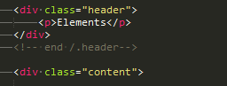"Header" class has to be added before "content" class in the html markup.
If you want to add an icon to your header - just add a line with icon.
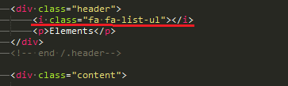"Content" class
You should to add all form elements inside this class.

"Footer" class
This class is used for buttons. Add your buttons inside this class.

Horizontal divider
Two types of dividers are allowed: line divider and text divider.
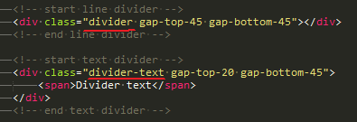Also, you can set the height for the gaps for dividers. Let's take a look to the css file:
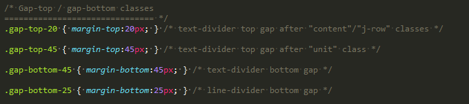So, you can select or 20px height gap, or 45px height gap.
"j-forms" class
This class is required for all forms. You have to add this class to any form for proper form displaying.
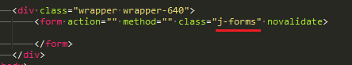"unit" class
This class is required for creating indents between rows in the form. You can add this class to any element and this element will have bottom margin equal 25 pixels. Pay attention: these indents will remain on any device: PC, tablet or mobile. That's why class="unit" can be used by several ways.
Case 1 - standalone element
Add class="unit" to every standalone element. This element will display separately from another form elements on any devices.
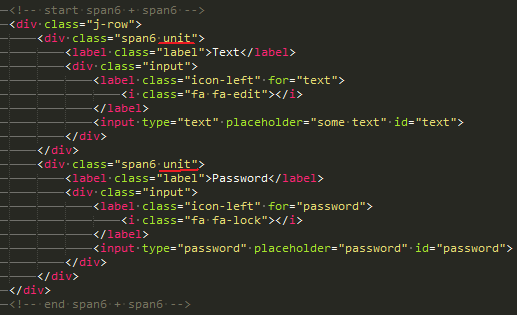 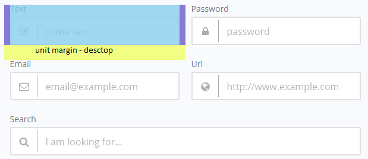 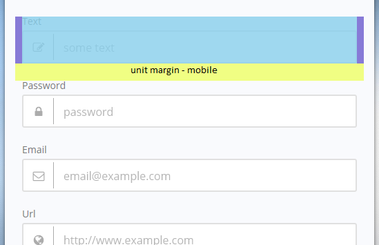Case 2 - group of elements
Add class="unit" to a group of elements (radio, checkbox, etc.) and this group will display without gaps on any device (any screen width).
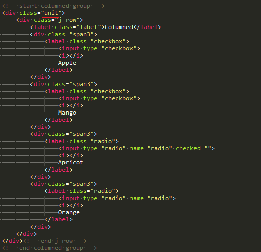 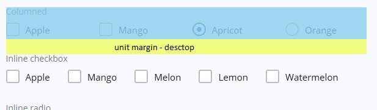 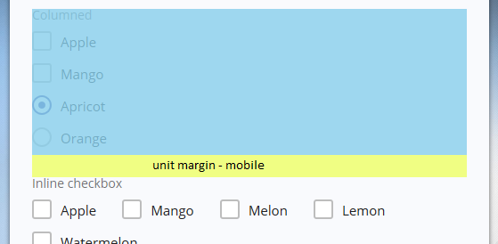Text input
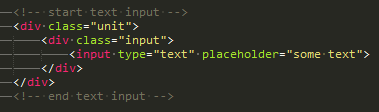Text input with left icon
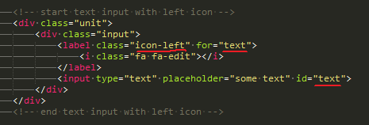Pay attention to the class="icon-left". This class required for the left-side icons. For the right-side icons you have to add class="icon-right".
Also take a look to the "for" and "id" attributes. These attributes have to be equal if you want to make focus on the field when icon is clicked.
Font Awesome - free library of icons - is used for icons.
Text input with icons and label
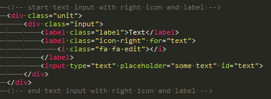More about icons and labels: "extensions/icons_labels.html"
Label for each column:
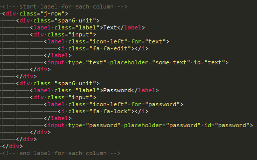Email and URL inputs
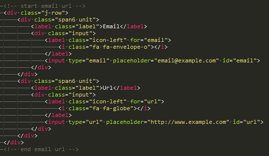Search and Textarea inputs
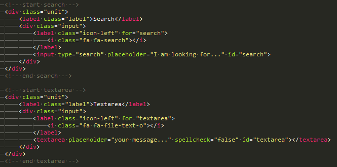Select input
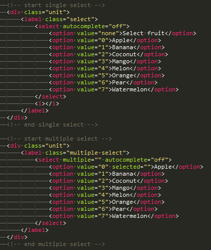Link
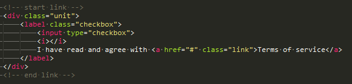Replace "#" in the "href" attribute with path to the "terms of service" document.
Tooltips
Two types of tooltips are allowed: text tooltip and image tooltip. You can use tooltip with any input: text, textarea, select. For image tooltips don't forget to add images to the form and set proper path to these images. More about tooltips: "extensions/tooltips.html"
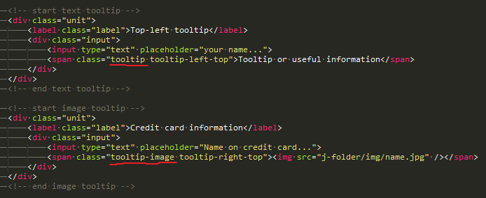Note message
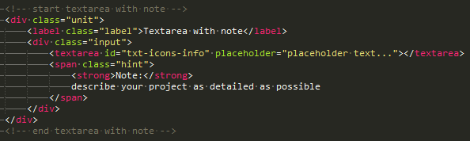Columned Checkbox and Radio
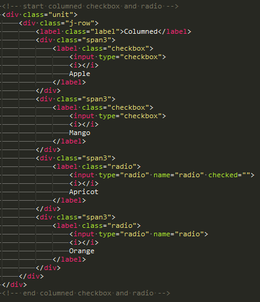Inline Checkbox and Radio
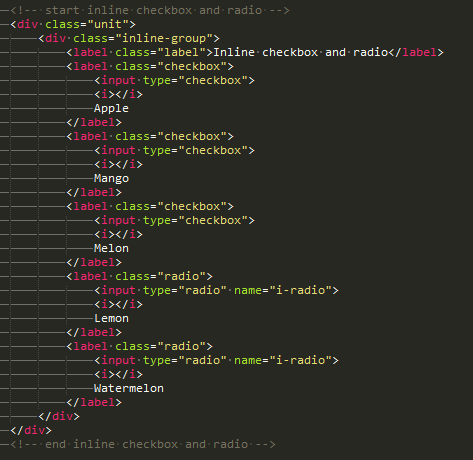Columned Toggles
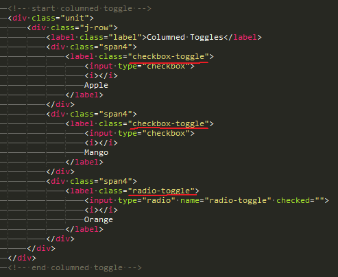Inline Toggles
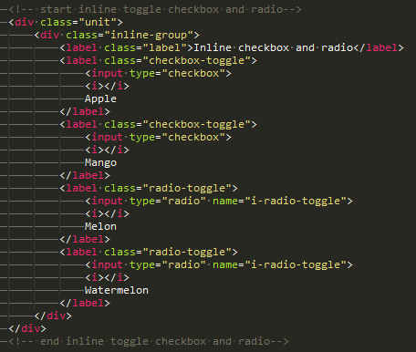Ratings
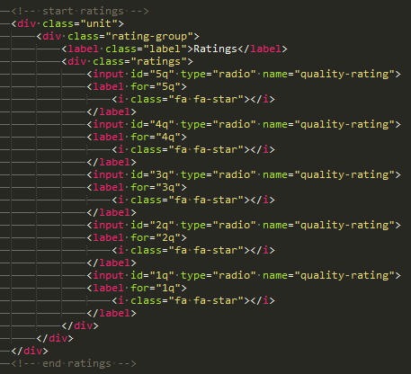File Buttons
File upload button available in four variations.
Prepend wide button:
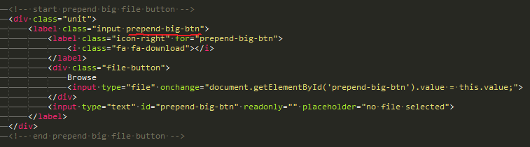Append wide button:
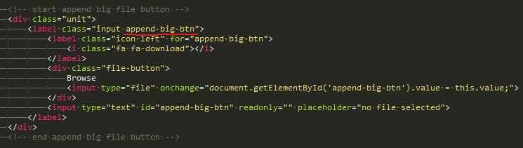Prepend narrow button and append narrow button:
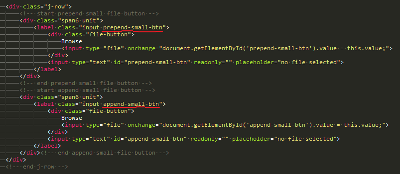For multiple file inputs you will have to adjust the markup. For example, it should look like this:
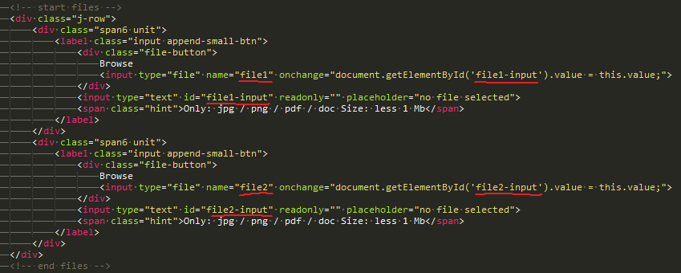
Buttons
Submit and Reset button are available.

For primary button you have to add class="primary-btn" to the button.
For secondary button you have to add class="secondary-btn" to the button.
For processing button you have to add class="processing" to the button.
Social buttons
Demo for social buttons: "extensions/social.html"
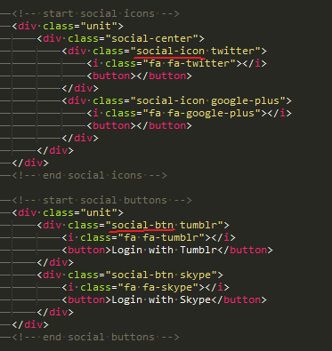For better user experience you may add social buttons to your form. Read more about how you can make authorization through social networks.
Widget
You can use widget addons or widget buttons in your form. Widgets can be of of different widths: 50px and 130px. Also, widgets can be left-side and right-side.
Widget addonFor instance, let's take a look to the html markup of narrow left-side widget addon:
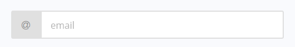 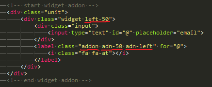As you can see, widget is created using class="widget". We set left padding for input using class="left-50". Widget addon is created using class="addon". Width and placement (left side or right side) of addon are configured by class="adn-50" and class="adn-left" accordingly. Pay attention that padding for the input has to be the same as addon width (in this example - 50px)
Html markup for wide right-side widget addon
Widget button
All rules for widget addons are suitable for widget buttons. But widget button is created using class="addon-btn".
Html markup for wide left-side widget button
Captcha
This is a simple PHP session captcha which you can use to reduce spamming activity on your forms. Main idea: PHP server creates an image with a sum of the digits and outputs this image to the html page. User has to enter valid sum of the digits. jQuery Validation Plugin uses "remote" method to validate the captcha. More info about client-side validation methods - in the "JS Validation" section.
Disabled state
Demo for disabled state: "extensions/disable_state.html"
You can make any form element disabled. Just add class="disabled-view" and "disabled" attribute to the element. HTML markup for the disabled text input:
Error state
Demo for error state: "extensions/error_state.html"
HTML markup for error message:
HTML markup for input field with error state:

The "span" with class="error-view" contains error message for the some particular field.
Success state
Demo for success state: "extensions/success_state.html"
HTML markup for success message:

HTML markup for input field with success state:
The "span" with class="success-view" contains success message for the some particular field.
Info state
Demo for info state: "extensions/info_state.html"
HTML markup for info message:
HTML markup for input field with info state:
The "span" with class="info-view" contains info message for the some particular field.
Warning state
Demo for warning state: "extensions/warning_state.html"
HTML markup for warning message:
HTML markup for input field with warning state:
The "span" with class="warning-view" contains warning message for the some particular field.
Image blocks
Demo for image blocks: "extensions/image_blocks.html"
You can use two types of image block: with or without text description. Html markup is similar for both types.
First of all - create a label with "checkbox-block" or "radio-block" class.
Next - add span with class "block-content" and span with class "block-image". If you want you may add a title for image.
For image blocks with text description you have to do the same, but add several elements: span with class="block-text-title" for text title. And span with class="block-text-desc" for text.
Please note: you may use grid system for image blocks as you did for all another fields, but with one condition - use "span" tags "div" tags for grid system instead.
Tabs
Demo for tabs: "extensions/tabs.html"
You may use tabbed window to display multiple forms at one screen. First - add div with class "j-tabs-container".
Next - add html elements for tabs with "id" attributes and "j-tabs-label" classes.
Add divs with forms, with "id" attributes and "j-tabs-section" classes.
In case you need more tabs - you may easily add css settings for new sections. Open "j-forms.css" file and add as many tabs as you need. Do not forget to add appropriate "id" and classes to the html markup.
CSS Structure
Every form has next css files in the "head" sections:
- demo.css - this file is required only for demonstration purpose. It sets site background. The background image is located in the folder: "img/";
- font-awesome.min.css - file is required for Font Awesome icons;
- j-forms.css - main css file. Contains all css properties. All sections in this file are commented and you can do your form customization. This file is duplicated for all forms and extensions.
/* Font =============================== */ ... /* Default =============================== */ ... /* Reset for -webkit / -moz browser =============================== */ ... /* Header =============================== */ ... /* Content =============================== */ ... /* Footer =============================== */ ... /* Dividers =============================== */ ... /* Gap-top / gap-bottom classes =============================== */ ... /* Labels =============================== */ ... /* Radio and checkbox =============================== */ ... /* Widget =============================== */ ... /* Inputs =============================== */ ... /* Placeholders =============================== */ ... /* Select =============================== */ ... /* Icons =============================== */ ... /* File for upload =============================== */ ... /* Buttons =============================== */ ... /* Tooltip =============================== */ ... /* Status message =============================== */ ... /* Disabled state =============================== */ ... /* Error state =============================== */ ... /* Success state =============================== */ ... /* Warning state =============================== */ ... /* Info state =============================== */ ... /* Ratings =============================== */ ... /* Social links =============================== */ ... /* Captcha =============================== */ ... /* Stepper =============================== */ ... /* Datapicker and Timepicker =============================== */ ... /* jQuery Slider =============================== */ ... /* Multistep form =============================== */ ... /* Modal form =============================== */ ... /* Pop-up form =============================== */ ... /* Grid layout =============================== */ ... /* Responsiveness =============================== */ ... /* Bootstrap compatibility =============================== */ ... /* Just Forms */ /* version 2.0 */ =============================== */ ... /* Just Forms */ /* version 2.3 */ =============================== */
If you would like to edit a specific section of the site, simply find the appropriate label in the CSS file, and then scroll down until you find the appropriate style that needs to be edited.
Example of the "green" color scheme from folder "css/":
/* ========================================= */ /* Color: green */ /* ========================================= */ /* Buttons =============================== */ ... /* Ratings =============================== */ ... /* Header + footer =============================== */ ... /* Other =============================== */ ... /* Radio and checkbox =============================== */ ... /* Toggle radio and toggle checkbox =============================== */ ... /* Tooltip =============================== */ ... /* Input =============================== */ ... /* TinyMCE input =============================== */ ... /* Image radio and Image checkbox =============================== */ ... /* Multiple Select Plugin =============================== */
If you want to make any changes with one of color schemes - just change the properties in the appropriate file in the folder "css/".
JavaScript Structure
Every form or template has some of the next files in the head sections:
- j-forms-additions.js - additional methods for Just Forms full (show/hide password, hidden elements, select with conditions, etc.);
- j-forms-modal.js - js code for modal forms;
- j-forms-multistep.js - js code for multistep forms;
- jquery.1.11.1.min.js - jQuery library;
- jquery.form.min.js - jQuery Form Plugin allows you to use HTML forms with AJAX;
- jquery.ui.min.js - jQuery library for Sliders and Date Pickers. This library should be added to the forms with jQuery sliders and data pikers;
- jquery.maskedinput.min.js - jQuery plugin for masked inputs (date, phone, numbers, etc);
- jquery.placeholder.min.js - jQuery plugin for proper placeholder displaying in the old browsers;
- jquery.spectrum.min.js - jQuery plugin for color picker;
- jquery.stepper.min.js - jQuery plugin for nummeric stepper;
- jquery.ui.timepicker.min.js - jQuery plugin for time picker;
- jquery.ui.touch-punch.min.js - jQuery plugin for proper slider work on mobile devices;
- jquery.validate.min.js - jQuery plugin for client-side validation;
- additional-methods.min.js - additional methods for client-side validation (file validation, etc.)
If you want to add any extension to your form (such as date picker or color picker) - please be sure that you add appropriate js script to the "head" section on your html page.
JavaScript Plugins
Date Picker
Demo for date pickers: "extensions/datepicker.html"
In this section we will discuss how you can add and configure date picker in your forms.
First of all, you have to add jquery.ui.min.js script in the "head" section of the html page. Second, you have to configure date picker settings.
Step 1:
In this step we add html markup for the date picker. Note: you have to configure some unique "id" attributes for date picker.
Step 2:
In this step we add js code for the date picker. You can add js code directly to the html page where your form is placed. Or you can add it to the "main" js file of your website.
In the "forms" folder you can find some form with date picker that has some differences. For instance, let's take a look to the "booking" form.
The difference lies in the fact that we create a wrapper function for every DatePicker instance. This function is required if we want to create DatePicker instance when we want, but not when html page is loaded. All forms are sent to the server without page reloading - and we need to reload the DatePicker instance manually, every time when a form is submitted successfully. This is what we do every time after successful form submitting.
The line - $( this ).valid(); - is required for date picker validation at once after field is lost a focus. This improvement is binded with some DatePicker plugin features.
More info about client-side form validation - in the JS Validation section.
Time Picker
Demo for time pickers: "extensions/timepicker.html"
First of all, you have to add js scripts in the "head" section of the html page. Second, you have to configure time picker settings.
Step 1:
In this step we add html markup for the time picker. Note: you have to configure unique "id" attribute for time picker.
Step 2:
In this step we add js code for the time picker. You can add js code directly to the html page where your form is placed. Or you can add it to the "main" js file of your website.
Color Picker
Demo for color pickers: "extensions/colorpicker.html"
First of all, you have to add js scripts in the "head" section of the html page. Second, you have to configure color picker settings.
Step 1:
In this step we add html markup for the color picker. Note: you have to configure unique "id" attribute for color picker.
Step 2:
In this step we add js code for the color picker. You can add js code directly to the html page where your form is placed. Or you can add it to the "main" js file of your website.
Nummeric Stepper
Demo for numeric stepper: "extensions/numeric_stepper.html"
First of all, you have to add js scripts in the "head" section of the html page. Second, you have to configure numeric stepper settings.
Step 1:
In this step we add html markup for the numeric stepper. Note: you have to configure unique "id" attribute for numeric stepper.
Step 2:
In this step we add js code for the numeric stepper. You can add js code directly to the html page where your form is placed. Or you can add it to the "main" js file of your website.
Sliders
Demo for sliders: "extensions/sliders.html"
First of all, you have to add js scripts in the "head" section of the html page. Second, you have to configure slider settings.
Step 1:
In this step we add html markup for the slider. Note: you have to configure unique "id" attribute for slider.
Step 2:
In this step we add js code for the slider. You can add js code directly to the html page where your form is placed. Or you can add it to the "main" js file of your website.
Masking
Demo for masking: "extensions/js_masking.html"
First of all, you have to add js scripts in the "head" section of the html page. Second, you have to configure masking settings.
Step 1:
In this step we add html markup for the masking. Note: you have to configure unique "id" attribute for masking.
Step 2:
In this step we add js code for the masking. You can add js code directly to the html page where your form is placed. Or you can add it to the "main" js file of your website.
TinyMCE
You can add WYSIWYG editor TinyMCE to any form.
First, connect required scripts in the html markup. Also do not forget to copy "tinymce" folder to your server. this folder contains all required files. Example forms with TinyMCE plugin you will find in the "forms/../contact_tinymce/" folder.
Second, open "j-forms.js" file and add js code for tinymce plugin.
you can configure this js code according to the TinyMCE API. Also this part of code already contains a validation function (for empty enter).
Cloned elements
Working form with cloned elements feature - in the "forms/../party_invitation_cloned_elements/" folder.
Demo for cloned elements: "extensions/clone_elements.html"
Step 1:
First of all, you have to add js scripts in the "head" section of the html page.
Step 2:
Next, wrap a div for cloning in the div with some unique class.
Step 3:
Add js code required for the plugin.
Currency format
Demo for currency format: "extensions/currency.html"
Working form with currency format feature - in the "forms/../order_logic_field/" folder.
Step 1:
First of all, you have to add js scripts in the "head" section of the html page.
Step 2:
Next, define a data attribute and class for every field with currency feature.
Step 3:
Add js code required for the plugin.
Autocomplete
Demo for autocomplete: "extensions/autocomplete.html"
Step 1:
You have to add js library in the "head" section of the html page.

Step 2:
Add id attribute to the input with autocomplete feature.
Step 3:
Add js code required for the autocomplete.
Google Map
Simple Google Map
Demo for google map: "extensions/form_google_map.html"
Step 1:
You have to add js library in the "head" section of the html page.
Step 2:
Add id attribute to the div with google map feature.

Step 3:
Add js code required for the google map.
Google Map with autocomplete as page background
Demo for google map as background: "extensions/form_map_background_autocomplete.html"
Step 1:
You have to add js library in the "head" section of the html page. Also add a css styles for the map. It should has height and width equal to the height and width of the screen.
Step 2:
Add id attribute to the div with google map feature.
Step 3:
Add js code required for the google map. This part of code contains a function for searching height of the screen every time when map is loaded.
Youtube/Vimeo
Demo for video players: "extensions/youtube_vimeo.html"
You can add a video player to any form. You have to add html markup with settings for the player.
Multiple Select Plugin
Demo for Multiple Select Plugin: "extensions/custom_select.html"
Step 1:
You have to add js library in the "head" section of the html page.
Step 2:
Add "id" attribute to the select. Also pay attention to the "name" attribute. As it is a select with multiple values you have to add square brackets for proper array processing.
Step 3:
Add js code required for the plugin.
Step 4:
In case you want validate a field with multiple select plugin - you have to add a custom line to the validation rules (see a pic). This line makes an exception for plugin hidden fields. Also do not forget to add quotes and brackets.
An example about how to process an array with values using php code you may find in the "forms/../subscribe_1" form.

JS Additions
Demo for js additions: "extensions/js_additions.html"
In this section we will discuss all javascript additions that are available in the Just Forms full. These additions will help your users during form submission process.
Show / Hide Password
Step 1:
You can add to your form "show/hide password" feature. Note: you have to configure unique "id" attribute for "show/hide password" feature.
Step 2:
In this step we add js code for the "show/hide password" feature. You can add js code directly to the html page where your form is placed. Or you can add it to the "main" js file of your website.
Enabled input / button
Step 1:
You can add to your form "enable/disable elements" feature. Note: you have to configure unique "id" attribute for "enable/disable elements" feature. Take a look to the class="disabled-view" and attribute disabled. These class and attribute are required.
Step 2:
In this step we add js code for the "enable/disable elements" feature. You can add js code directly to the html page where your form is placed. Or you can add it to the "main" js file of your website.
Hidden elements - checkbox
Step 1:
You can add to your form "hidden elements" feature. Take a look to the class="hidden-elements" and class="hidden". These classes are responsible for the next features:
- class="hidden-elements" - this class is required for the js code. If this class is present - js code knows that current element should be hidden;
- class="hidden" - this class is responsible for hiding elements. It contains css properties.
Step 2:
In this step we add js code for the "hidden elements" feature. You can add js code directly to the html page where your form is placed. Or you can add it to the "main" js file of your website.
Hidden elements - select
Step 1:
You can add to your form "hidden elements" feature. Note: you have to configure unique "id" attribute for every hidden field. class="hidden" - this class is responsible for hiding elements. It contains css properties. Main idea of this feature: when user select some value - some element appears.
Step 2:
In this step we add js code for the "hidden elements" feature. You can add js code directly to the html page where your form is placed. Or you can add it to the "main" js file of your website.
Select with conditions
Main idea of this feature: when user select some value in the first select field - appropriate values appear in the second select field. If user selects default value in the any select field - values in the next select fields should disappear.
In this example we will work with cars and car models. You can add any values you want.
Step 1:
In the first step you have to add select fields to the html page. Note: you have to configure unique "id" attribute for every select field.
Because values in the select fields should appear dynamically - we should add values only for the first select field.
Step 2:
Let's take a look to the js code
First - we have to create a list with models for every car. We do it in the select № 2 section. For example, for the "BMW" car we added three models: M6, X5, Z3. We have created values for the select № 2.
Second - for every model we have to define required colors. We do it in the select № 3. For example, for the model "BMW Z3" we added next colors: 'teal', 'purple', 'cyan'. That is, we have to create arrays with values for the next select field. Every array from these arrays must match to the value from current select field.
Step 3:
In this step we have to add js code that should dynamically add values to the next select fields if current select field is changed.
If some value was selected in the first select field - we create list of values for the second select field and add this list to the html page.
If some value was selected in the second select field - we create list of values for the third select field and add this list to the html page.
Modal Form
Demo for modal forms: "extensions/modal_form.html"
You can easily use any form in modal window. All modal forms are responsive.
Insert your form to the div with class="modal-form". Add "id" attribute to this div.
Add a link with class="modal-open" and reference to this "id".

Add a close button to your form. Modal form will be hidden when this label will be clicked.
Add js code for a modal form. You can add js code directly to the html page where your form is placed. Or you can add it to the "main" js file of your website.
Multistep Form
Three types of multistep form are allowed:
- multistep form with steps - demo:"extensions/multistep_with_steps.html"
- multistep form with clickable steps - demo:"extensions/multistep_with_clickable_steps.html"
- multistep form with out steps - demo:"extensions/multistep.html"
Multistep form with steps
You can easily use any form in multistep window. All multistep forms are responsive. For example, we will work with next form: - "extensions/multistep_with_steps.html"
Step 1:
Add js script to the "head" section of your html page.
Step 2:
Add class="j-multistep" to your form. Due to this class, js code knows that form will be with steps.
Step 3:
Add to the div with class="content" a div with steps. You can add as many steps as you want. Pay attention to the class="step" and class="steps". These classes are required for proper form work.
Step 4:
Add several fieldset tags to your form. Evenly distribute all rows with fields between all fieldsets. The optimum number of fieldsets - 3. But you can add as many fieldsets as you want. Note: quantity of the "fieldset" tags has to be equal to the quantity of the "step" divs from previous step.
Step 5:
Add to the footer next buttons: "Next", "Back", "Submit". Note: class="multi-submit-btn", class="multi-next-btn", class="multi-prev-btn" are required classes.
Now your multistep form is ready for work.
Multistep form with out steps
All rules for multistep form with steps are suitable for multistep form without steps. The only difference between these forms - you may not add "steps" to the html page. JS code will work properly without class="step" and class="steps".
Multistep JS Code
JavaScript code for multistep forms is multipurpose and doesn't depend from any "id" attribute. So, you can use it without any changes with any number of multistep forms at one page. More about how to validate multistep forms - in the New Form section.
First, multistep script try to find a form with class="j-multistep" on the page. And, for each form script configure settings (such as active step, active fieldset, show/hide buttons)
When the "next" button is clicked - current fieldset became hidden, next fieldset became active, buttons are processed.
When the "previous" button is clicked - current fieldset became hidden, previous fieldset became active, buttons are processed.
Multistep form with clickable steps
You can use multistep form with clickable steps. It doesn't matter: you are a new buyer or you want to adjust your existing multistep form - an order of actions will be the same.
Step 1:
Open html markup and wrap every step with a tag with "step-link" class. Then add "data type" attribute with number of step. You may add as many steps as you need.
Step 2:
Open "j-forms.js" file and add next js function. This function you will find in the "j-forms-multistep-clickable.js" file. This function is well commented and any problem shouldn't arise. Just copy it at the same place as in the demo file. Now your multistep form has clickable steps.

Please pay attention to the next lines:
These lines are required if you want to validate fields on current step when "step" button is clicked. More about how to combine multistep code with validation rules - in the "JS structure" subsection of the "New form" section.
Multistep Form with Logic
In this section we will discuss variety extensions for the multistep forms. You can add these extensions to any multistep form (new one or already existing).
Multistep Form with Form Details
Demo: "extensions/multistep_form_with_details.html"
This extensions will help your user to check entered info. In the last step all data from the form will be shown.
Specify id attribute for the input field.

Add html markup to the last step
Add js function for proper form work.
Multistep Form with Variable Steps
Demo: "extensions/multistep_form_with_variable_steps.html"
Working form: "forms/../multistep_form_with_variable_steps/"
In this type of extension user has the ability to choose what kind of info will be shown in the next step.

Pay attention that by default all next steps are hidden. Only when user will click some button - appropriate div inside the fieldset became visible.
Js function to make all work properly.

Multistep Form with Dinamicaly Steps using Checkbox
Demo: "extensions/multistep_with_dinamic_steps_checkbox.html"
Working form: "forms/../multistep_with_dinamic_steps_checkbox"
This type of extension allows to user add a step dynamically using checkbox. If user want enter additional info - next step will be shown.
HTML markup
Js function
Multistep Form with Dinamicaly Steps using Radio Buttons
Demo: "extensions/multistep_with_dinamic_steps_radio.html"
Working form: "forms/../multistep_with_dinamic_steps_radio"
This type of extension allows to user add a step dynamically using radio buttons. If user want enter additional info - next step will be shown.
HTML markup
Js function
Multistep Form with Dinamicaly Steps using Select
Demo: "extensions/multistep_with_dinamic_steps_select.html"
Working form: "forms/../multistep_with_dinamic_steps_select"
This type of extension allows to user add a step dynamically using dropdown field. If user want enter additional info - next step will be shown.
HTML markup
HTML markup
Multistep Form with Dinamicaly Steps using Input Field
Demo: "extensions/multistep_with_dinamic_steps_input.html"
Working form: "forms/../multistep_with_dinamic_steps_input"
This type of extension allows to user add a step dynamically using input field. If user want enter additional info - next step will be shown.
HTML markup
HTML markup
Multistep Form with Dinamicaly Steps combine all types
Demo: "extensions/multistep_with_dinamic_steps_all_types.html"
This type of extension combine all available types of logic (checkbox, radio, dropdown, input, select).
Interesting Moments with Multistep Form with Dinamicaly Steps
Some interesting moments. All rules are appropriate for all forms with dinamicaly steps:
All extensions with dinamicaly steps require to check if user enter info in the additional step. And if yes - clear all fields in the additional step if a form was subbmitted from the first step, but not from the additional step. To fulfill this condition an additional js function was added.
Also pay attention that we manually add a logic function to execute if first step is active. If you have several logic functions in one form - you have to add to the first step exactly the same function you have in the html markup. For example: first step contains checkbox logic fucntion, second step contains dropdown logic function. So, you have to add checkbox logic fucntion to execute when first step is active step.
Next, pay attention to the next variables
These variables contain indexes of the fieldsets for every logic function. We will use these indexes for processing the buttons when appropriate step will be active.
Note: when next button will be clicked only three logic functions will be executed. In this particulary example dropdown logic function (select field) is placed in the first step. So, it is not nessesary to execute it when next button is clicked.
One more thing: if you are using working form with logic function - you have to execute the logic function after a form is submitted successfully. Note that you have to execute exactly the same function you have in the first step html markup.
Order Form with Calculations
In this section we will discuss order forms with calculations.
Demo for order form with checkboxes, radios and dropdowns: "forms/../order_logic_field/"
Demo for order form with input fields: "forms/../order_logic_check_radio/"
Demo for order form with date range: "forms/../order_logic_date_range/"
Demo for order form with sliders: "forms/../order_logic_sliders/"
Demo for order form with chained dropdowns: "forms/../order_logic_chained_dropdown/"
Order Form with checkboxes, radios and dropdowns
Every variable in the html markup has "data-price" attribute. This attribute is required. Values of all this attributes are summed and final price obtained.
In the js file we have several function. Every time when some field is changing - appropriate function obtain new price. calculateTotalPrice() function calculate total price.
Order Form with input fields
This form is very simple. In the html markup some field has fixed value and some doesn't. Also unique id attributes are specified for every field.
Js function grabs all values (predefined or not) and calculate a total price.
Please pay attention to the next classes: "fruits-calculation" and "quantity-events".
"fruits-calculation" class is required for form calculation. If user click or change fields with values - "getFruitTotal()" function will be executed.
"quantity-events" class adds events listeners for the "quantity" fields. If user press up and down buttons, scroll mousewheel - "getFruitTotal()" function will be executed.
Order Form with date range
Some variables in the html markup has "data-price" attribute. This attribute is required. Values of all this attributes are summed and final price obtained.
In the "j-forms.js" file we have a few interesting moments. Let's take a look to these moments.
Take a look to the "parseDate()" function.
In this function you can select what type of the date format you want to use: "mm/dd/yyyy" or "dd/mm/yyyy". You can use any format. Just comment/uncomment appropriate line with code. Next, you also have to set a date format in the "dateFrom()" and "dateTo()" functions. Set the same format as you have already setted in the "parseDate()" function.

Now your calculations using date range should work properly.
All another code is well commented and any misunderstanding should not arise.
Order Form with sliders
Every slider in this form has a <input type="hidden"> field. This field is required for sending a value to the server. Also these fields have default values equal to the default values from the slider features.
In the "j-forms.js" file every slider has it's own UI Slider instance. When user will drag a slider button - new value will be added to the <label> tag for displaying in the form and to the hidden input as we mentioned above.
In the "square feets" and "feets price" sliders we execute "calculateTotalPrice()" function. This function will calculate total amount of the money and add it to the html page.
Order Form with chained dropdowns
This form contains several "select" tags with related data. First "select" tag has options in the html markup, second and third tags - in js file.
Js file has a few moments: pay attention to the two arrays. First array "models" is for notebook models. You can add as many as you wish. Second array "actions" is for service actions and prices. You can add as many services as you wish. Do not forget to "price" element for every new "action" attribute.
Popup Form
Demo for popup forms: "extensions/popup_form.html"
You can easily use any form in pop up window. Two types of pop up forms are allowed: menu pop up form and bottom pop up form.
Popup Menu Form
Main idea of menu pop up foгm is that you can add any form to menu item on your website. And, when user will click this item - pop up menu form will appear. If you haven't enough space on your site - pop up menu form will solve this problem. You can use existen forms from "template" folder or "forms" folder or you can create your own form from scratch.
For creating pop up menu form from scratch you have to make several steps:
Step 1:
Add class="popup-list-open" to the item of your menu.
Step 2:
Inside menu item with class="popup-list-open" you have to add div with class="popup-list-wrapper". This div will hide the form when menu item isn't active.
Step 3:
Inside div with class="popup-list-wrapper" you can add your form. You can add any kind of form. But if your form will be too big (will have too many rows and inputs) it may not please your users.
Step 4:
In this step you have to add javascript code that will be responsible for the appearance of the form. So, first you have to add "id" attribute to your form. Second, you have to add code that will wait for user clicks. After that, when menu item will be clicked - the form will appear. When user will click anywhere outside the form - form will disappear. You can add this js code to the botton of the html page or in the main js file of your website. This code works well for desctop, tablet and mobile devices.
By default, the width of div with class="popup-list-wrapper" is equal to 400px. So your form will have the same width.
All elements inside pop up menu form are responsive. Pop up menu form is responsive as well. When a screen width will be equal to 620px or less - pop up menu form will have width equal to width of parent element (in this case - width of all menu). If there is no parent element, pop up menu form will have screen width.
We have discussed all required classes for pop up menu form. class="popup-menu" and class="popup-list" - are not required classes and were added only for demonstration purpose.
Popup Bottom Form
You can use existen forms from "template" folder or "forms" folder or you can create your own form from scratch. For creation pop up bottom form from scratch you have to make several steps:
Step 1:
Add div with class="popup-btm-400" to your html page. There are two types of pop up bottom forms: class="popup-btm-400" - 400px width, class="popup-btm-640" - 640px width.
You can select any width for your pop up bottom form.
Note: all forms are responsive. When your form will be opened on mobile devices all rows will be placed one under another. As pop up bottom forms have fixed position on the page - users will not be able to scroll the forms if some rows will disappear behind the top of the screen. Therefore, it is the better way do not add a lot of rows to the form. Example of this issue you can see on the screenshots below:
Step 2:
Main idea of pop up bottom form is that user clicks on label and form slips from the bottom. This goal can be achieved using <input type="radio">. That's why in this step you have to add <input type="radio"> on the page.
When input with id="popup-input-open" is clicked - form slips from the bottom. When input with id="popup-input-close" is clicked - form disappears. Note: by default input with id="popup-input-close" has attribute checked, so the form isn't shown.
Step 3:
Now let's add a label to the page. When this label will be clicked - the form will arise.
Step 4:
In this step we have to add a wrapper to a form. This wrapper will hide a form outside the screen.
Step 5:
In this final step the form will be added inside the wrapper from previous step. Also, we have to add a close button. Note that label with class="popup-btm-close" has an attribute for="popup-input-close". Therefore, when this label (close-button) is clicked - form disappears.
After you will make all previous steps done - your pop up bottom form will be ready for use.
Form without Footer and Header
Demo for forms without footer and header: "forms/smtp_sendmail/booking_without_footer_header"
As you may guess, this type of form is created very easy. You have to delete "header" and "footer" class from your form. Button from "footer" you have to copy to the bottom of the "content".
JS Validation
In the Just Forms full for client-side validation we will use jQuery Validation Plugin. In this section we will disccus how you can add validation to any field.
Demo for available validation methods: "extensions/js_validation.html"
If you want to add client-side validation to your form you have to make some steps:
Step 1:
First, you have to connect js scripts to your html page.
- "jquery.validate.min.js" - contains core validation mathods (required, length, value, etc)
- "additional-methods.min.js" - contains additional validation methods ("remote" method for captcha, file for upload validation, etc)
Step 2:
In this step we will discuss main steps of the validation process.
On the picture above you can see a js script that is responsible for the form validation. We can divide this script to the next sections:
- "@validation states + elements" - define error class, success class, error element and other settings;
- "@validation rules" - define rules(min length or required field) and messages('Please enter your value') for validation process;
- "Add class 'error-view'" - define where error classes will be placed;
- "Add class 'success-view'" - define where success classes will be placed;
- "Error placement" - define where error messages will be placed;
- "Submit the form" - contains instruction for performing if form doesn't have any errors.
Step 3:
So, let's validate some field:
Let's assume that we want to check if a field is empty.
We have added a rule and a message for our field. Now if user will try to submit a form when this field is empty - error message will appear.
So, let's validate some group of elements:
Rules for group elements are the same as for fields. But pay attention to the class="check". If you want to validate group of elements - this class is required. The validation script will be looking for this class because after div with class="check" error message will be placed. So, if you validate some groups of checkboxes or radios - do not forget to add this class.
Captcha validation:
Demo for captcha validation: "extensions/captcha.html"
For captcha validation we will use "remote" method:
Main idea of the "remote" method - script gets the captcha value from the form and (without page reloading) send this value to the server script (path to the server script is in the remote rule). If server script returns true - we have success validation. If not - we have error message. Just Forms full contains captcha that based on a PHP session. PHP script creates the image with a sum of the digits. And, user has to enter a valid sum to make successful captcha validation. You can add a captcha to any form. For proper captcha work do not forget to add "php/captcha" folder to your server.
Delete validation:
Sometimes you may need to validate only particular field, not all fields. In this case you can comment (or delete) rules from "@validation rules" section.
In the picture above we have canceled validation of the group of elements which has name "checkbox".
Note: you can canceled only client-side validation by doing this action. If you want to cancel server-side validation - take a look to the PHP Structure section.
Submit the form:
After successful validation, data from the form should be sent to a server for further processing. jQuery Form Plugin send data to the server. Let's talk about Submit the form section using forms/booking1 form like an example.
Submit the form section contains only one jQuery Form Plugin function - ajaxSubmit(). This function sends data from the form to the server without page reloading. This function contains next parts:
- "target:" - response from server will be appended to this div;
- "error:" - function that defines instruction if error will happen;
- "beforeSubmit:" - function that defines what will happen during form submitting process (submit button will be disabled);
- "success:" - function that defines what will happen if successful response from server will be received.
All js code is well commented so, any problem with understanding of the meaning of the code shouldn't arise.
PHP Structure
In this section we will discuss structure of the php folder, php files and a few interesting moment.
So, let's start from the beginning. For example, take a look to the "forms/smtp_sendmail_database/order_multistep_with_steps" form
php folder has next structure:
- phpmailer folder - contains PHPMailer files;
- action.php - contains all php settings;
- csrf.php - php class for csrf protection;
- message.php - email template for sending through a form;
- mysql.php - php function to connect to a database using MySQLi extension;
- pdo.php - php function to connect to a database using PDO extension;
- validation.php - contains all server-side validation functions.
All working forms from "forms/" folder have similar structure so you don`t need to change a lot of code with other forms
action.php
This is the main php file that contains all properties for the fields validation, upload_file" action, "duplicate_to_database" action and "send_letter" action.
action.php consists of next sections:
Your data
In this section you define your email, name, subject and settings to access a database.
Settings
In this section you have to choose what action you want to do with data received through form. If you want to do the action with data - set true, if you don`t want - set false.
For example, if you don`t want to validate name, phone and message. And, you don`t have a database to duplicate the data - your "Settings" should look like below:
Variables
In this section PHP script work with data received through the form.
CSRF protection
In this section PHP script validates token which was obtained by submitting a form. More about token in the "Security" section.
Note: this section contains message that your clients will see if a token will be incorrect. You can change this message if you want.
Validation
In this section PHP script validates all fields that you have defined as mandatory to validation in the "Settings" section. All validation methods for this form are located in the "validation.php" file.
Main idea of the validation process:.
Php script calls validation function for every variable, recieved through the form. If result of this validation process isn't equal to "valid" - we have an error and we are adding this error to the "$error_text" array.
If "$error_text" array has any errors - script creates a list with errors and returns this list to the html page.
Upload file to the server
In this section, script downloads a file to the "upload_file" folder.
Duplicate info to a database
In this section, script duplicates infp to a database. More about database - in the "Database" section.
Sending email
In this section, script sends email. You can send email by two ways: using sendmail function or using smtp function. Depending on which way you will choose, you have to set $sendmail or $smtp to "true". By default, all form using $sendmail function.
Script sends the letter to the email that you defined in the "Your data" section. Also, you want to use smtp function - you have to configure smtp connection.
In case you need the letter to be send to more than one email address just change the variable $recipients = false; Set this variable to "true" and add other email addresses. Replace "email@domain.com" with recipient's email, replace "name of recipient" with recipient's name (optional).
Note: your own email address you have to add at the “Your data†section.
If you want to send a copy of the email to the sender - just add sender's email and sender's name to this section. See a screenshot below:
In this particular case, variables $name and $email contain sender's name and sender's email, which were received through the form. Note: your form must contain fields for sender's name and sender's email if you want to send copy of the letter using this way.
If you want to send successful message to the client after submitting – look at the "contact_captcha_autoresponse" or "contact_captcha_checkbox_autoresponse" forms. These forms differ how success message will be send: automatically or by selecting the checkbox.
Success message
If any error doesn't occurs - script creates a success message and returns this message to the html page. You can change it if you want.
validation.php
This php file contains validation methods for the input fields. You can easily modify or replace any of the methods.
message.php
This file contains html message template.
response.php
At the folders "form/../contact_captcha_autoresponse/" and "form/../contact_captcya_checkbox_autoresponse/" you can find file "response.php". This file contains html template that will be sent to the sender as a confirmation message.
mysql.php and pdo.php
This files contain functions that duplicate information from your form to the database. If you want to do that - don`t forget to change lines with information to get access to the database.
New Form
In this section we will create a new form. Based on this example, you can create your own forms or adjust already existing forms.
Example of this working form: "forms/smtp_sendmail_database/order_multistep_with_steps"
So, let`s start from the beginning and divide form creation to several steps:
- create folder structure
- add all required javascript files
- add all required css files
- add all required php files
- create html document, add form elements and scripts
- create main javascript file with validation rules
- create action.php file and add required validation rules
Folder structure
We start by creating required folders.
- css folder - contains all css files;
- fonts folder - contains Font Awesome fonts;
- img folder - contains background picture;
- js folder - contains all js files;
- php folder - contains all php files;
- sql folder - contains dump of a database table;
- upload_file folder - for downloaded files.
As all css files and Font Awesome fonts are the same for all forms - you can just copy these files from any form.
Let's take a look to the js folder:
For our new form we don't need all js files that are in js folder. But we will copy all files in case if our form will be updated in the future.
Most important js file - "j-forms.js". This file contains all js code required for proper form work.
HTML structure
In this section we will create "index.html" All elements and scripts will be added to this file. As we want to create multistep form - we have to abide by the rules. More details about multistep form - in the Multistep Form section.
We have added all required scripts to the html page.

Do not forget to add class="j-multistep" to our form. Pay attention to the action attribute. It contains the path to the file with server script. Also, take a look to the method and enctype attributes. These attributes are required as we want to build form with file uploaded feature.
First fieldset.
Second fieldset.

Third fieldset.
Take a look to the div with id="response". Server message will be added into this div.
Footer
We finished with html markup. Let's do some js magic))
JS structure
In this section we will create main js file that contains all js code for our form.
First, we create a function. This function will include all other function and instruction.
Add phone masking.
Add datepicker.
Add settings for the jQuery Validation Plugin. Note: we validate our form (form "id" attribute is equal to "id" in the "j-forms.js").
Add validation rules. Pay attention to the file extensions. You can add any correct file extension. More about jQuery Validation Plugin you can read on the official plugin page from the "Credits" section.
Add validation messages. You can change these messages as you wish.
Add rules for error view and error messages.
Next we start to work with jQuery Form Plugin. "submitHandler" section contains only one function that responsible for submitting the form without page reloading.
We send form data to the server. If we get response from the server - we delete "error-view" and "success-view" classes from the form, make the submit button available.
But if we get a "success message" class form the server - it means that form submitted successfully. In this case, we can reset the form, update datapickers, make all buttons disabled while success message is shown.
After that, we want to hide success message. And, we create a function that will contain some rules: delete success message, make all buttons available, hide all buttons except "next" button (as we work with multistep form), make first fieldset and first step active (only for multistep form)
Next we have to add js code for multistep form. These code is multipurpose and doesn't depend from any "id" attribute.
There is some interesting moment with form validation. We don't want to allow users to go to the next fieldset if current fieldset has any validation errors. So, every time when "next" button will be clicked - we will validate all fields from current fieldset. And, if any errors will occur - "next" button won't work.

With "previous" button - nothing won't change. "Previous" button will work no matter if any validation errors exist in the fieldset or not.
PHP structure
Next step - is to create action.php and add all required configuration. First we will create section with POST variables.
$file_name - php variable that contains name for uploaded file. If you will decide not to upload file to a server - this variable won't be empty and message will send properly.
$row_id - php variable that contains ID of the last row from database. If you will decide not to duplicate data to a database - this variable won't be empty and message will send properly.
$valid_types - php variable that contains allowed types for the uploaded file.
After "Variables" section we will create "CSRF protection" section where we validate token received through the form.
Note: token name has to be equal to the token name from the html page.
After "CSRF protection" section we will create "Settings" section where we define actions with data received through the form.
Next step - "Your data" section where you define your email, name and database settings to get access to it.
$mysql_table - variable that contains name of the table in the database.
Further - the "Validation" section.
All validation function will be placed at the "validation.php" file that is connected at the top of the "action.php".
Next section - Upload file to the server
Next section - Duplicate info to a database
Next section - Sending email
And final section - Success message. Section contains the success message.
For proper email sending - do not forget to copy "phpmailer" folder that contains PHPMailer class.
validation.php
This file contains validation functions which were used in the "Validation" section of the action.php.
mysql.php and pdo.php
This files contain functions that allow you to duplicate all information from the form to the database.
mysql.php file
pdo.php file

message.php
All message templates have the same structure. You can easily modify any template (add or delete any variable).
Let's summarize: we have created multistep form with steps from scratch. We have discussed all interesting moments and functions. All other forms have the same structure and validation rules. So, this section will help you understand how to create a new form.
Subscribe form with MailChimp
In this section you will find an example how you can create a subscribe form using MailChimp API.
Demo of this form you can find in the "forms/subscribe_mailchimp/" folder.
Let's take a look to the file structure:
You have to copy a "MCAPI.class" on your server. This file contains a PHP class to work with MailChimp API without any special knowledge. More about available methods you can read here.
"subscribe_message" file contains an email template. This "confirm" email will be sent to every user who passed subscription process successfully.
Now, let's take a look to the "action.php" file where subscription function is placed. By default, this function has only one method - listSubscribe(). This method is required if you want to add an user's email to your subscribe list.
Pay attention to the underlined values. For proper work you have to add your own MailChimp API key and MailChimp list ID. "MCAPI.class" will use these values for connection to the MailChimp API and copying user's email to your subscription list.
MailChimp API key you may find in the admin panel of your MailChimp account.
MailChimp list ID you may find in the admin panel of your MailChimp account.
Next, if subscription will be successful - the user will receive an custom "confirmation" email ("subscribe_message.php"). You may configure this template as you want.
Several Forms at One Page
It is very easy to use several forms at one page. You can add any quantity of forms to the one page. You can add any kind of forms to the one page: multistep forms, pop up forms or classic forms. Let us start.
Demo for several forms at one page: "forms/smtp_sendmail/login_recovery_1.html"
For example, we will combine "booking" form and "callback" form at one page.
Step 1:
For better understanding, we will add a specific prefix to every form. "book" - for the booking form, "call" - for the callback form.
So, first step - rename "j-folder" for every form according with prefixes. Copy folder with new name to one folder.
Step 2:
We have to add html markup for both forms at one page.
Create independent tokens for every form.
Do not pay attention that html markup isn't optimal. We will fix it later.
Step 3:
In this step we will change path in the "action" attribute and "id" attribute for every form. We start to divide our forms.
Step 4:
As all forms have the same structure and fields, it may happen that fields with equal "id" attribute are present in both forms. In this step we will change equal "id", according to unique form prefix. In this particular case, we have three equal "id": "phone", "name", "response". In your case equal "id" may not be present.
New "id" attributes for booking form

New "id" attributes for callback form
Step 5:
As we have changed "id" for the fields and forms - we have to change "id" in the "j-forms.js" files.
Change "id" in the "j-forms.js" for booking form.
Change "id" in the "j-forms.js" for callback form.
Step 6:
Now both forms are independent from each other, both forms don't have equal fields and "id".
In this step we will connect all required scripts and files in the "head" section of the html page.
We have added scripts and files to the html page. But as we can see every file is connecting several times. It doesn't make sense and we want to optimize our html code.
As all form have the same structure - there is no difference from which folder we will connect any script. that is why we can delete all repeating connection.
We have deleted all repeating connection. If you want, you can combine j-forms-call.js and j-forms-book.js files in one file.
If you want the forms have different colors - add appropriate color files and add "color" class to the each form.
Several multistep forms at one page
There are no special rules for several multistep forms at one page. You have to complete all steps from this section and from Multistep Form section (if you are creating multistep form from scratch). If you want to have multistep form with validation - please take a look to the New Form section. In this section we created a new multistep form with validation and discussed some interesting moments about multistep form validation.
Let us summarize: All this may seem scary, but do not worry - this is easier than it seems. As all form from the pack have the similar folder structure, you just have to divide files for one form from files for another form. After you will move through previous steps – your forms will be ready for work independently from each other.
Security
Just Forms full contains strong defence against XSS attack and CSRF attack. You have already known about captcha, let's take a look to another defence methods.
CSRF protection
Each working form contains next code in the HTML markup:
At the beginning of each HTML document, we include PHP class csrf.php and create instance of this class. This instance is necessary and helps create unique token. Every time, when a form is submitted, this token is checked on the server. If token isn't correct, user have to reload web page where form is placed. So, no one has opportunity to connect to your form and submit it with your information, like login and password.
Example with two tokens at one page:
File action.php contains section with CSRF token validation:
At this section we create instance of csrf.php again and use check_token() method to check a token received through the form.
Next, take a look to the code at csrf.php file.
This code are well commented and it easy to understand. Pay attention to the timeout variable at the beginning of the code. This variable contains time period for each token in seconds. By default token will be valid 300 seconds (5 minutes). You can set any time period for tokens.
XSS protection
All input data are validated on the server. PHP function htmlspecialchars() and strip_tags() are used for validation. Also, all variables, except the tokens, have limited length. Examples of data validation you can find at the PHP Structure section.
Google reCaptcha
Live demo how google reCaptcha works you can find on the demo site of the "Just Forms full" version here.
Demo forms for the google reCaptcha - in the "forms/smtp_sendmail_google_reCaptcha_2.0" folder.
Inside any forms you can use two types of the captcha: build-in captcha and google reCaptcha. Build-in captcha was discussed in the previous sections ("HTML Structure" and "JS Validation"). In this section we will discuss the google reCaptcha v 2.0: how to install, customize and use.
Step 1:
First of all you have to go to this google page:https://www.google.com/recaptcha/intro/index.html and click "get reCaptcha" button. Sign in into your google account and register your site where the captcha will be placed.
You should get two keys: a site key - this key you have to insert into your html form

and the secret key: this key is required for the validation process on your server

Step 2:
Open a html form and add next script to the bottom of the "head" section:
Next, insert a div with google reCaptcha instance in the html markup. Use "site key" from the previous step to insert inside this div.
Step 3:
Now your reCaptcha works. But we should add verification rules to the php scripts, because now reCaptcha is only a nice looking checkbox in the user's browser.
Please open your "j-folder/php" folder and copy a "reCaptcha" folder if it isn't there yet. "reCaptcha" folder you may find in the demo form in the "forms/smtp_sendmail_google_reCaptcha_2.0" folder. "reCaptcha" folder contains all required classes for proper verifications.

Step 4:
Open "action.php" file and add next lines of code:
$secret variable contains a secret key from the first step.
Before "Sending email" section you have to add "reCaptcha verification" section.. In this section we will include a class for the reCaptcha verification. If an answer from the google server will not be a success - error message will arise.
Step 5:
If the form will be submitted successfully - you have to reload reCaptcha instance. Add a line with code to the "j-forms.js"
If you want to set custom language for your reCaptcha - just add language abbreviation to the line with script
Step 6:
By default, reCaptcha appears inside an iframe. This iframe isn't responsive. If you want to make your captcha responsive (at least, it shouldn't break your site on mobile devices) - you have to connect "google-recaptcha.css" file to your form. This file you may find in the "forms/smtp_sendmail_google_reCaptcha_2.0" folder.
You can connect this file like on the pic below or you can just copy the code from this file to your main css file ("j-forms.css") to avoid one more request to the server.
Useful links:Google Docs
the library to work with reCaptcha
Language abbreviations
Database
In this section we will discuss how to work with database (DB): - how to create new connection to the DB -how to duplicate data to the DB - and how you can configure work with DB (add or delete new field and variables).
For example, we will take forms/smtp_sendmail_database/error_report form. For example we assume that variables, recieved through the form, contain next data:
$message = "Message from your client"; $email = "Your client's email"; $file_name = "some-file-name.jpg";
Step 1: Create table in the DB
We need to create a table in the DB to store data recieved through the form. Dump of the mysql table is placed in the sql folder. You can use this dump for table creation in your DB on your server. Data types for the rows in the DB table you can define by your own based on the type of data recieved through the form.
Pay attention to table's name and column's names: table's name and prefix for every column's name are equal.
It did like that for better user experience. If you want to change table name in your DB - don't forget to change table name in the action.php. All prefixes in the column names will change automatically.
So, step №1 - create table in the DB with name that you want.
Step 2: DB connection
Two types of DB connection are allowed in every working form from the pack: mysqli and PDO connection. To select the type of connection you have to set true or false value to the appropriate variables in the action.php.
In this section we are working with PDO connection. Work with mysqli connection is similar.
Step 3: Variables
We collect all variables from our form and passing them to the function. This function contains all setting for connection with DB.
PDO function:
mysqli function:
All settings for the DB access we already configured in the action.php
Step 4: Processing data
PDO function uses DB settings and sets connection with DB. When all data will be recorded to the DB, function will create $row_id variable. This variable contains ID of the last row with new data in the DB table. This ID will send in message. If connection to the DB won't be successful - $row_id will contain error description and also will be send in message.
So, if our previous action were successful - we will see a new row in our table:
Add new variable
You can easily add or remove data from the connection function. For example we add new variable $phone that contains a phone number of your client.
Step №1: create new row in the DB table:
Step №2: add variable to the function:
Step №3: process variable and store it to the DB:
Step №4: enjoy new record in the DB :-))
If you want to delete any variable - repeat previous steps but delete variable.
CSV Files
Forms with CSV feature are placed in the "source/forms/smtp_sendmail_csv" folder.
You have the opportunity to save all data received through the form to a CSV file. Let's take a look to the callback form which you can find in the "smtp_sendmail_csv/call_me/" folder.
First of all, in the folder structure you will find a new folder - "csv_file". In this folder a CSV file will be placed.
File "action.php" contains a section named "Duplicate info to a CSV file". This section contains all code required for CSV file processing (create a new file, add a new line to the CSV file, etc.)

Take a look to the "$header_csv" array. This array contains names for the rows in the CSV file. If a CSV file doesn't yet exist - the script will use this array to create rows in the file. If you want to rename any row - you should change this array.
"$variable_csv" array contains variables with data received through the form. Add the variables you want to be added to a CSV file.
Note: if you will change one of these arrays (add or delete variable, change a name, etc) - do not forget to change another one. As both arrays have the same order for row names and variables.
Next, take a look to the "$file_csv" variable. This variable contains a name for the future CSV file. In this particular case - a file will have a "j-forms-csv" name and will be placed in the "csv_file" folder.
Extensions
You have already known about folder "extensions/". These extensions represent the features of the Just Forms full framework that allows you to create and customize any forms with client-side validation.
FAQ
How to redirect to thanks page after submitting the form?
Redirect after success message:
Please, add next line with code to your main javascript file (j-forms.js)
Redirect without success message:
First, you have to change your js code. In this case javascript code will redirect you to your page if an answer from the server will be not error message.
Second, you have to comment (or delete) success message in the "action.php":

After form submission I get error/success message at "action.php" file but not inside form.
If you get error/success message at "action.php" file like below:
instead to get message like below:
It means that you have an error in javascript code and javascript code doesn't work. To find out what exactly error you have you may use two tools:
- Chrome dev tools in the Chrome browser - it is build-in tools for developer. Open your page and press F12. In the "Console" tab you should see js error description;
- FireBug plugin for Firefox browser - it is not build-in tools and you have to download it first. You may download it on official web site here. After installation you have to open your page and press F12. In the "Console" tab you should see js error description.
Now you know what exactly error you have.
Next, for avoiding a lot of errors please be sure that:
- you don't connect the same js script twice to your html page (for example jQuery library, at the top and bottom of the html page);
- you have a proper order of js scripts at your page (for Just Forms js plugins- use default form as an example of proper order). Js scripts should be connected as below:
- jQuery library
- any js plugin...
- jQuery validation plugin
- jQuery additional methods (for file or captcha validation)
- any js plugin...
- j-forms.js
I want to create a button instead a link to open a modal form
It is very easy. Take a look to the screenshot. All you need to do - is to set your own css properties for the button. As this button is beyond the form wrapper and css properties won't work for this button.
How to duplicate the message to the user that sent the form?
You can do it by two ways
First:
You can find "contact_captcha_autoresponse" and "contact_captcha_checkbox_autoresponse" forms in the pack. These forms allow you to send copy of the email to the sender. The difference between those forms is how the confirmation letter will be sent: automaticaly or if sender will check a checkbox.
Second:
Every form has opportunity to send letter to many recipients. You can find this code in the "Sending email" section in the "action.php" file. Change "$recipients" to "true" and replace email address with variable "$email". "$email" contains sender's email address.
Please note: for proper wok your html form should contain "Email" field. And in the "action.php" you should validate "$email" variable. Because without sender's email where will you send a letter?))
In the "recipients" section required only email. Name is optional, therefore you may don't add it.
I want to upload a file. When I click on the button to choose the file to upload, I get "C://fakepath/filename". I want to see a real path to the file instead the fake path.
The browser changes the real path to "C:\fakepath\"" so malicious sites can't use javascript to glean information about your computer's directory structure.
Try to change "onchange" function in your html page: onchange="document.getElementById('file-one').value = this.files[0].name;"
I want to to add a new field to my form.
If you want to add a new variable - you have to add it in all required files. For example you want to add "New name" field. Take a look to the pics and use them as an example:
index.php file:
j-forms.js file:
action.php file:

validation.php file:
message.php file:
If database feature is used
action.php file:
mysql.php file:
pdo.php file:
database table dump file:
If csv feature is used
action.php file:
If you want to delete any field - take all steps in reverse order.
I have changed variable's name and now my form doesn't work. What should I do?
Before you will change any variable's name in the "action.php", please, take a look to the "forms" folder from the pack. You will find there 2 folders:
- smtp_sendmail - this folder contains ready for use forms with smtp or sendmail function. Use this forms only for sending emails;
- smtp_sendmail_database - this folder contains ready for use forms with smtp or sendmail function + database functions. Use this form if you want to copy data to the database.
- smtp_sendmail_csv - this folder contains ready for use forms with smtp or sendmail function + "save to csv file" feature. Use this form if you want to save data to a csv file.
For example, you want to use sendmail function without duplicate data to a database - please, select one form from "smtp_sendmail" folder. Do not modify forms from another folders because you can make some mistakes and your form won't work.
Next, after you will select a form, install it to your server, according to the instruction from "Quick Installation" section. Do not modify any variables (you will do it later).
Submit the form. It should works properly.
And, if you want to change any variables name - please change it only after your form will be successfully installed to your server. In other case - some errors may occur and it will be difficult to find these errors. Also, if you want to modify any variable - you have to modify it in all files: "action.php", "validation.php", "message.php"
I want to attach a photo to an email / I do not get attached photos when I receive an email
If you want to send uploaded file to your email you have to add next line of code: $mail->AddAttachment("../upload_file/".$file_name); (if you use a form with multiple upload - you have to add two lines, for every file name - $first_file_name and $second_file_name). Place it anywhere between $mail = new PHPMailer(); and !$mail->Send(); in the "action.php".
For sendmail() function.
For smtp() function.
By default, file will uploaded to the "upload_file" folder on your server. But maybe your host doesn’t allow to upload files directly to the server and saves them to some folder in your host account. Please check, have you any uploaded files in the "upload_file" folder
And if "upload_file" folder doesn’t contain any file – $mail->AddAttachment("../upload_file/".$file_name); function won’t work.
So, you have to find where your file was uploaded and add the correct path to the $mail->AddAttachment(); function.
How to change allowed file extensions/change allowed file size?
Client side validation of the file (in the user's browser) - open "j-forms.js" file and add your extension:
Server side validation of the file (on your server) - open "action.php" file and add your extensions:
Max file size you can set in the "validation.php" file. For example:
- $attach_file_size = 1*1024*1024; - it will be 1 MB
- $attach_file_size = 2*1024*1024; - it will be 2 MB
I want to have upload file fields NOT required and still have all validation rules for files.
Please open "action.php" file and set "false" for files validation:
Next, change lines for files in the "Validation" section. If $_FILES array will contain user files - apply validation rules. Pay attention, that "file1" and "file2" values are name attributes in the html markup for <input type="file"> tags. If you have one file field in your form - do the same actions with your file name and validation rules.
And do not forget to disable/comment out file validation rules in the "j-forms.js" file:
I have an error message: Incorrect token. Please reload this webpage. How can I add/delete security token? Why web page with form has ".php" extension?
Web page with form has ".php" extension because the form has php security token. In the top of every default form pages you may find php code.
If you need a token (blue line on pics):
In case you need a token - the extension of the web page where form is placed should be ".php", because there is php function. Also be sure that name of the token is the same in all files
index.php file:
action.php file:
If you don't need a token (red line on pics):
You may delete code for token in the html markup and in the "action.php" file. Now your form doesn't have a token and you may set any extension for the html page - ".html" or ".php"
html markup
action.php file:
The same actions you could make for post code, credit card number, etc.
I want to change phone mask / phone validation rule.
Phone number has two types of validation. You have to change both of them.
Client side validation (in the user browser):
Open "j-forms.js" file and change a line with mask like on the pic below. Now you have a phone mask like "(xxxxx xxx xxx)" in the js file.
Home page of the mask plugin - here
Server side validation (on your server):
Open "validation.php" file and change a line with regular expression like on the pic below. Now you have a phone mask like "(xxxxx xxx xxx)" in the php file.
Live php regular expression tester - here
How could my form accept email addresses like "any_chars@domain.com" only? I want use regular expression for my email.
Email address has two types of validation. You have to change both of them.
Client side validation (in the user browser):
You have to create custom validation rule for email with your own regular expression. Take a look to the pic below:
Open "j-forms.js" file and add a new function for email validation. After, use this function in validation process. Now an email address like "any_chars@domain.com" will be valid in the js file.
Home page of the jQuery validation plugin - here
Server side validation (on your server):
Open "validation.php" file and change a line with regular expression like on the pic below. Now an email address like "any_chars@domain.com" will be valid in the php file.
I want to use TinyMCE Editor, but I get some chars instead french/greek symbols. I want to get TinyMCE message with all styles (bold, etc).
Message contains special html chars instead french/greek symbols (ΧΡΗΣΤΟΣ) because all data is processed with htmlspecialchars() php function. You can comment next line in the "action.php" file (see pic - blue line) and all chars will be sent as it is.
If you want to send a message with all styles - you have to add minor changes to the "action.php" file (see pic - red line).
How can I change the width of my form?
All forms have two variants of width:
- class="wrapper-640" - 640 px;
- class="wrapper-400" - 400 px.
For example, you want multistep form will have a width 800px. Open "j-forms.css" file and make changes:
Now your form have a width - 800 px, and it will be responsive when screen width will be equal to 620px. If you want your form will be responsive earlier, for example when screen width will be 750 px, change next line of code:
I have an error message: Mailer Error: Could not execute: /usr/sbin/sendmail -t –i.
If you sometimes get this error - you are probably using a shared hosting. Quality of this hosting is not good. You can try to change your hosting.
If you always get this error:
First, this type of error arise when you don't have permission to use directory "usr/sbin" or there is no installed sendmail function in this directory. You can create a support ticket and ask your host about sendmail.
Second, you can try to comment one line of code in the "action.php". Find the next line: "$mail->isSendmail();" in the "Sending email" section and comment it. This line should look like this "//$mail->isSendmail();".
Hello, I encounter an error: Mailer Error: SMTP connect () failed when I submit the form. Why this error?
This error occurs because many reasons: smtp settings, your host settings etc. This error means that your form can't connect to your mail server. Most probable, error occurs because smtp settings on your host. Every host has his own smtp settings(port connection, authentication rules) You can make a request to your host support and ask them about how you can solve this problem.
You have to know what kind of error is appears when you try to connect to the server. Because this issue can occur for many reasons.
Step 1:
First, please open "action.php" and find next line:
Replace 0 with 1. So the line will be like:
Step 2:
Comment the "j-forms.js" file with all js code in the "index.php" file:
Step 3:
Submit your form as usual, with all valid information (because server-side validation doesn't allow you to submit a form). And after form will be submitted - you should see a message from the PHPMailer with smtp error:
You should see an error description and an error number in the brackets.
If instead error description you get strange characters - go to the "action.php" and comment next line. Then submit your form again.
Now you know what exactly smtp error arise while you are trying to connect to your server. You can find the answers using links below.
Do not forget to change the code back in the "action.php" and "index.php".
Also, a screenshot with working smtp settings as an example:

Some useful links where you can find why smtp error occurs:
send-email-using-gmail-smtp-server-through-php-mailersmtp-connect-failed-error-in-phpmailer
phpmailer-to-use-gmail-as-smtp-server-could-not-connect-to-smtp-host-mailer-err
send-email-using-gmail-smtp-server-through-php-mailer
phpmailer-and-gmail-smtp-error-failed-to-connect-to-server
mail-not-sending-with-phpmailer-over-ssl-using-smtp
google-1
google-2
PHPMailer - issue-1
PHPMailer - issue-2
PHPMailer - issue-3
I have submitted my form and some error arise. Why this error?
Case 1:
If you get such type of error - most probably you have an error in the form attribute "action" in the "index.php". Because javascript code can't find a file which is written in the "action" attribute. Be sure that this attribute contains correct path to the “action.php†file.
Case 2:
If you get such type of error - most probably you don't have a connection to the internet. Please, check your internet connection.
Case 3:
If you get such type of error - most probably you are working on local host and you try to submit a form without localhost connection.
Case 4:
If you can see this function when your form is placed on a real web server - for some reasons php code doesn't executing on your server. Please, check logs on your server.
Case 5:
If you get an 500 Server Error - please check your backend files. This error may arise because any problem with server files: a typo, server settings, parse error, etc. Also, please take a look to the server log file, error description may be there. If you get this error after any changes in server files - check these files.
Changelog
- 01/31/2016 - Just Forms full v 2.3
Note: if you are not a new buyer - please update main css file "j-forms.css" and css files with color settings. All changes are placed in the bottom of the file in the "Just Forms version 2.3" section.
Multiple Select plugin was added. Demo"extensions/custom_select.html"
"Modal form" extension has been improved (page scroll was added). Demo"extensions/modal_form.html"
"Tabs" extension was added. Demo"extensions/tabs.html"
Multistep form with clickable steps was added. Demo"extensions/multistep_with_clickable_steps.html"
Image blocks were added. Demo"extensions/image_blocks.html"
Order form with logic using chained dropdowns. Demo"forms/../order_logic_chained_dropdown/"
- 09/04/2015 - Just Forms full v 2.1
Order form with logic using date range. Demo"forms/../order_logic_date_range/"
Order form with logic using sliders. Demo"forms/../order_logic_sliders/"
- 08/13/2015 - Just Forms full v 2.0
Note: if you are not a new buyer - please update main css file "j-forms.css" and css files with color settings. All changes are placed in the bottom of the file in the "Just Forms version 2.0" section. This update required only for new elements and forms. If you won't use any element from the version 2.0 - you may ignore this recommendation.
Contact form with TinyMCE editor was added. Demo: "forms/../contact_tinymce"
Multistep form with variable steps was added. Demo: "forms/../multistep_form_with_variable_steps"
Multistep form with form details was added. Demo: "extensions/multistep_form_with_details.html"
Were added multistep forms with dinamically steps:
using checkbox - demo: "forms/../multistep_with_dinamic_steps_checkbox"
using radio button - demo: "forms/../multistep_with_dinamic_steps_radio"
using select - demo: "forms/../multistep_with_dinamic_steps_select"
using input field - demo: "forms/../multistep_with_dinamic_steps_input"
combine all types - demo: "extensions/multistep_with_dinamic_steps_all_types.html"
Form with google map was added. Demo: "extensions/form_google_map.html"
Form with autocomplete google map as a site background was added. Demo: "extensions/form_map_background_autocomplete.html"
Were added next plugins:
autocomplete feature - demo: "extensions/autocomplete.html"
cloned element fearure - demo: "extensions/clone_element.html"
currency feature - demo: "extensions/currency.html"
youtube and vimeo players - demo: "extensions/youtube_vimeo.html"
Subscribe form with MailChimp was added. Demo:"forms/subscribe_mailchimp/"
Order form with logic using checkbox and radio. Demo"forms/../order_logic_check_radio/"
Order form with logic using input fields. Demo"forms/../order_logic_field/"
Form with cloned elements was added. Demo"forms/../party_invitation_cloned_elements/"
- 06/06/2015 - Just Forms full v 1.1
CSV feature added. Added the opportunity to save all data received through the form to the CSV file. More about - in the "CSV" section.
- 04/15/2015 - Just Forms full v 1.0
Initial release
Credits
I`ve used the following product in my work:
- jQuery library by jQuery foundation
- jQuery UI library by jQuery foundation
- jQuery Form Plugin by malsup
- jQuery Placeholder Plugin by Mato Ilic
- Font Awesome by Dave Gandy
- jQuery Validation Plugin by Jörn Zaefferer
- jQuery Masked Input Plugin by Josh Bush
- Spectrum Colorpicker by Brian Grinstead
- Numeric Stepper jQuery plugin by Luciano Longo
- jQuery Timepicker Addon by Trent Richardson
- jQuery UI Touch Punch by Dave Furfero
- PHPMailer - The classic email sending library for PHP
- MCAPI-PHP - MailChimp PHP API Wrapper 1.3
- TinyMCE - Javascript HTML WYSIWYG editor
- jQuery Cloneya - jQuery class for cloning DOM elements with their children
- autoNumeric - International currency formatting
- Google Maps
- Youtube Player
- Vimeo Player
- Google reCaptcha
- reCAPTCHA PHP client library - the library to work with the reCaptcha
- MULTIPLE SELECT - jQuery plugin to select multiple elements with checkboxes
Thank you for your attention and thank you for making the decision to buy this product. I hope you found it worthwhile.
Please, don`t forget to leave nice feedback about this product and rate it 5 stars :))
Best Regards, Alex.